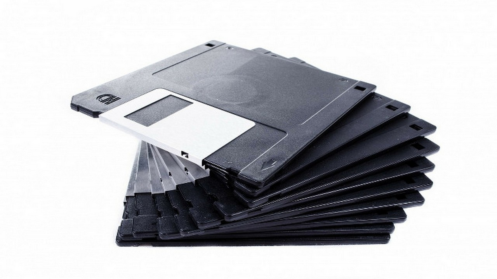

Disquete

El disquete (en inglés diskette) o disco flexible[5] es un
soporte de almacenamiento de datos obsoleto de tipo magnético,[6] formado por
una fina lámina circular (disco) de material magnetizable y flexible (de ahí
su denominación),[5] encerrada en una cubierta de plástico, cuadrada o
rectangular, que se utilizaba en la computadora, por ejemplo: para disco
de arranque, para trasladar datos e información de un ordenador a otro, o
simplemente para almacenar y resguardar archivos.
La llamada «disquetera», «unidad de disquete» o «unidad de disco flexible» es
el dispositivo o unidad de almacenamiento que lee y escribe los disquetes, es
decir, es la unidad lectograbadora de disquetes.
Este tipo de soporte de almacenamiento es vulnerable a la suciedad y los campos
magnéticos externos,por lo que deja de funcionar con el tiempo o por el
desgaste.